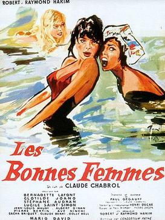

Les Bonnes Femmes

Claude Chabrol
1960
100 minutes
Wikipedia link
IMDB link
TV Tropes link
This is text.
Time to choose something different:
- Why would those women settle for hanging out with those two childish dopes and a killer when they could be hooking up with Alain Delon? - Turn to section 174
- Better off working in an appliance store than a sausage factory! - Turn to section 209
- Hopefully none of those women will be pushing a baby carriage any time soon...especially down the Odessa Steps! - Turn to section 7